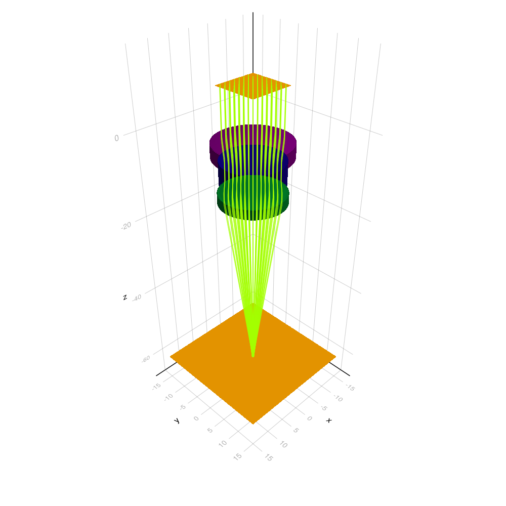
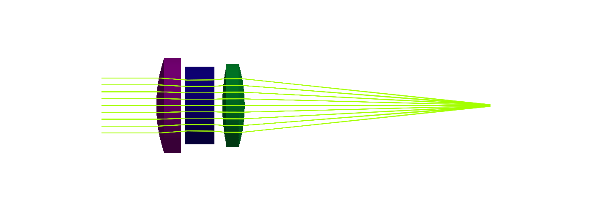
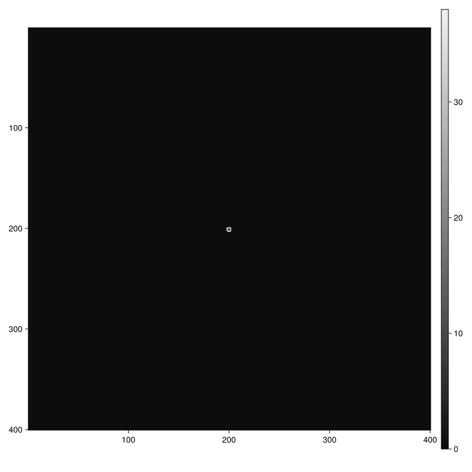
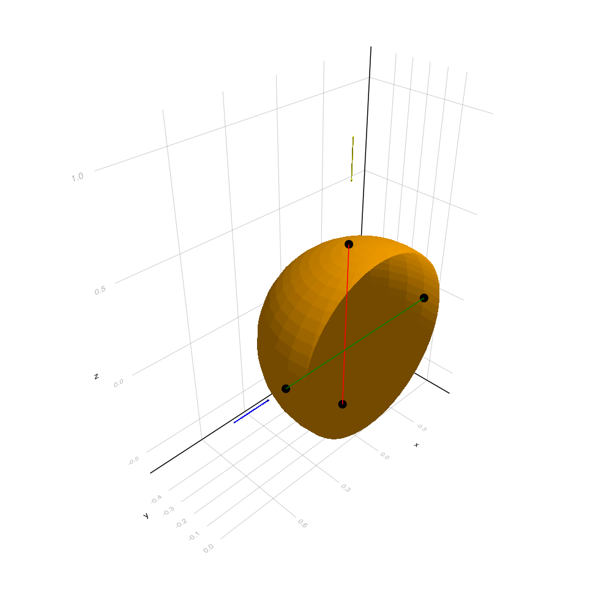
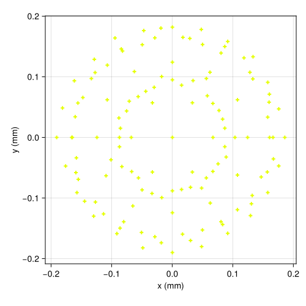
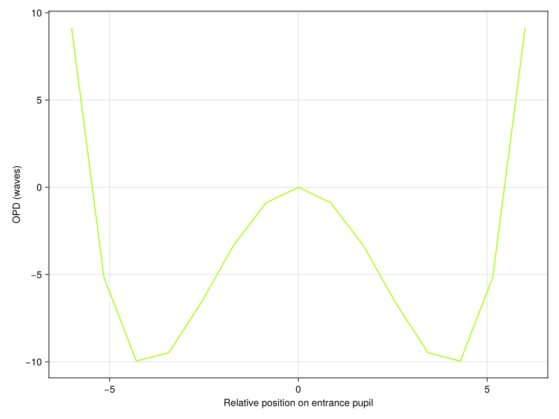
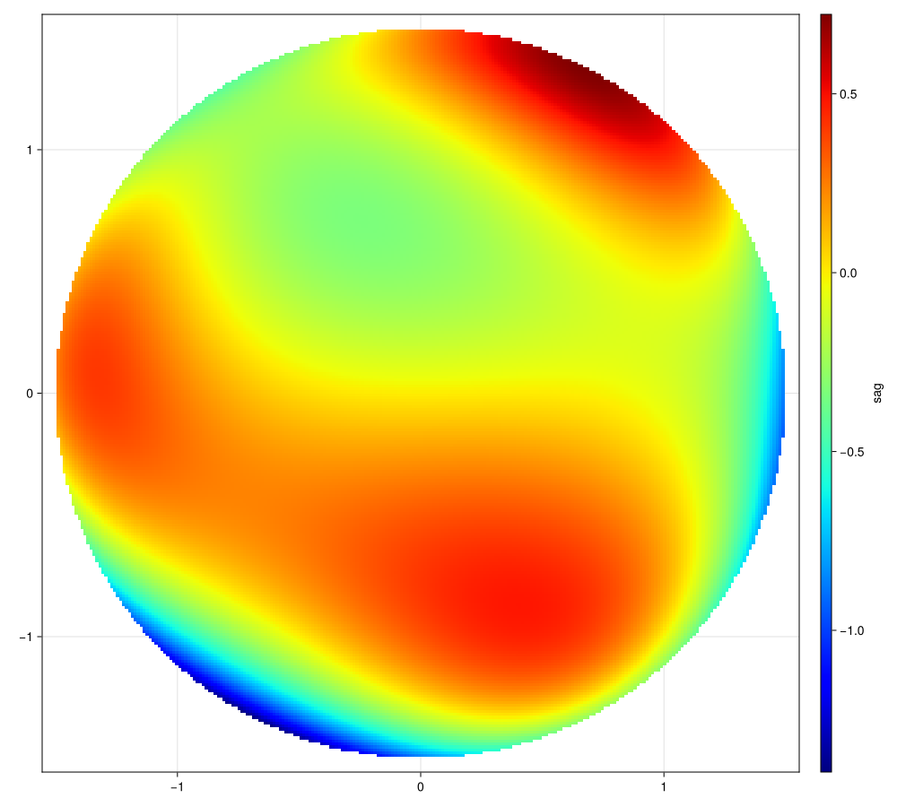

Visualization
OpticSim draws systems, surfaces, rays and more in 3D using Makie, and makes 2D plots such as spot diagrams and surface sag maps.
The drawing functions live in the Vis module. They are implemented in a package extension that loads automatically when you load a Makie backend, so OpticSim itself stays fast to load:
using OpticSim
using GLMakie # interactive window, with buttons to switch between 3D and 2D views and take a screenshot
# or
using CairoMakie # static, high quality images; works without a GPUMakie and OpticSim export some of the same names, such as Sphere and translation. To use OpticSim's versions without a prefix, write import GLMakie rather than using GLMakie.
In Pluto notebooks call Vis.set_current_mode(:pluto) so the drawing functions return the figure instead of opening a window.
Tracing rays through a system
The examples on this page use a Cooke triplet:
using OpticSim, AGFFileReader
using DataFrames: DataFrame
cooketriplet(::Type{T}=Float64, detpix::Int=1000) where {T<:Real} = AxisymmetricOpticalSystem{T}(
DataFrame(
SurfaceType=["Object", "Standard", "Standard", "Standard", "Stop", "Standard", "Standard", "Image"],
Radius=[Inf, 26.777, 66.604, -35.571, 35.571, 35.571, -26.777, Inf],
Thickness=[Inf, 4.0, 2.0, 4.0, 2.0, 4.0, 44.748, missing],
Material=[AGFFileReader.Air, AGFFileReader.Examples_N_SK16, AGFFileReader.Air, AGFFileReader.Examples_N_SF2, AGFFileReader.Air, AGFFileReader.Examples_N_SK16, AGFFileReader.Air, missing],
SemiDiameter=[Inf, 8.580, 7.513, 7.054, 6.033, 7.003, 7.506, 15.0]
),
detpix,
detpix
)Vis.drawtracerays draws the system and the paths of rays from a ray generator, colored by wavelength:
Vis.drawtracerays(cooketriplet(), trackallrays=true, test=true, numdivisions=100)
view=:side draws it like a lens layout: from the side, optical axis horizontal, light travelling left to right:
Vis.drawtracerays(cooketriplet(), trackallrays=true, test=true, numdivisions=100, view=:side)
Vis.drawcomparison draws several systems one above the other with the same rays, for example two designs, and Vis.scene makes an empty figure to build your own drawing in.
The image formed on the detector:
image = Vis.drawtraceimage(cooketriplet(Float64, 400), test=true)
Vis.showimage(image)
Basic drawing
Vis.draw draws an object in a new figure and Vis.draw! adds more objects to it. This is all you need to build up a visualization piece by piece:
obj = (Sphere(0.5) ∩ Plane(0.0, 1.0, 0.0, 0.0, 0.1, 0.0))()
ray1 = Ray([0.0, -0.1, 1.0], [0.0, 0.0, -1.0])
ray2 = Ray([0.8, 0.0, 0.0], [-1.0, 0.0, 0.0])
Vis.draw(obj)
Vis.draw!(ray1, rayscale=0.2)
Vis.draw!(ray2, rayscale=0.2, color=:blue)
Vis.draw!(surfaceintersection(obj, ray1), color=:red)
Vis.draw!(surfaceintersection(obj, ray2), color=:green)
OpticSim.Vis — Module
VisDrawing and plotting functions for OpticSim objects.
The functions are declared here but implemented in the OpticSimMakieExt package extension, which loads automatically once a Makie backend is loaded, e.g.
using OpticSim, GLMakie # interactive window
# or
using OpticSim, CairoMakie # static images, works without a GPU
Vis.draw(Examples.cooketriplet())OpticSim.Vis.draw — Function
draw(ob; resolution = (1000, 1000), kwargs...)Draw an object in a new figure and display it. kwargs depend on the object type.
OpticSim.Vis.draw! — Function
draw!([lscene], ob; kwargs...)Draw an object in an existing scene (the current one if lscene is omitted). kwargs depend on the object type. Unrecognized kwargs are passed on to the underlying Makie plotting function.
Objects that can be drawn, and their main keyword arguments:
| Object | Keyword arguments |
|---|---|
Surface | numdivisions = 30, normals = false, normalcolor = :blue, plus those of TriangleMesh |
TriangleMesh | color = :orange, shaded = true, wireframe = false, linewidth = 3, transparency = false, normals = false |
CSGTree, CSGGenerator | numdivisions = 30, plus those of TriangleMesh |
several Surfaces or TriangleMeshes | colors = false: color each one differently |
LensAssembly, CSGOpticalSystem, AxisymmetricOpticalSystem | each element is colored differently |
BoundingBox | drawn as a wireframe |
Ray, OpticalRay | color = :yellow, rayscale = 1.0; optical rays can use colorbysourcenum, colorbynhits |
LensTrace or a vector of them | colorbysourcenum = false, colorbynhits = false, otherwise colored by wavelength |
Interval, DisjointUnion, Intersection | normal = false for intersections |
| a point, a vector of points | markersize = 20, color = :black |
(point1, point2) line, or a vector of them | color = :yellow |
emitter Source, CompositeSource | debug = false: also draw the local axes, sample positions and rays |
a mesh file name (.obj, .stl, .ply, .off, .2dm) | color = :gray, transform, scale = 1.0, shaded, wireframe. Requires MeshIO to be loaded. |
OpticSim.Vis.scene — Function
scene(resolution = (1000, 1000))Create a new Makie Figure with a 3D LScene and make it the current figure. Returns (figure, lscene).
OpticSim.Vis.update_camera_orientation! — Function
update_camera_orientation!(lscene, ϕ, θ)Point the camera at the scene from angles 0 ≤ ϕ ≤ 2π and -π/2 ≤ θ ≤ π/2. For example (0, 0) looks along the x axis and (π/2, 0) along the y axis.
OpticSim.Vis.save — Function
save(path::String)Save the current figure to an image file.
OpticSim.Vis.showimage — Function
showimage(image::AbstractArray)Show a 2D image, such as a detector image, in grayscale with row 1 at the top. Images with more than 2 dimensions get a slider for each extra dimension.
Analysis plots
A spot diagram of where rays from a collimated source hit the detector:
source = Sources.Source(
transform=translation(0.0, 0.0, 10.0),
origins=Origins.Hexapolar(8, 8.0, 8.0),
directions=Directions.Constant(0.0, 0.0, -1.0),
)
Vis.spotdiag(cooketriplet(), source)
The optical path difference across the entrance pupil:
Vis.plotOPD(cooketriplet(), samples=20)
The sag of a Zernike surface:
zernike = ZernikeSurface(1.5, radius=5.0, conic=1.0, zcoeff=[(7, 0.2), (9, 0.2)], aspherics=[(10, -0.01)])
Vis.surfacesag(AcceleratedParametricSurface(zernike), (256, 256), (1.55, 1.55))
OpticSim.Vis.drawtracerays — Function
drawtracerays(system; raygenerator, view = :perspective, test = false, trackallrays = false, colorbysourcenum = false, colorbynhits = false, rayfilter = onlydetectorrays, verbose = false, resolution, kwargs...)Draw an optical system along with the rays traced through it. If trackallrays is true the whole ray path is drawn, otherwise only the final segment hitting the detector. Rays are colored by wavelength unless colorbysourcenum or colorbynhits is set. Only ray paths that reach the detector are drawn; set rayfilter = nothing to draw all of them.
lensalpha sets the opacity of the lens elements (default 1). The default raygenerator is a 9 × 9 grid of collimated rays at 0.55μm coming down the optical axis from z = 10: few enough that the lenses stay visible.
view = :side shows the system from the side, like a lens layout drawing: the optical axis horizontal, light travelling left to right, orthographic projection, fitted to the system (see sideview!). resolution defaults to (1000, 1000), or (1400, 500) for the side view.
drawtracerays!([lscene], system; ...) adds to an existing scene, with drawsys and drawgen controlling whether the system and ray generator are drawn.
OpticSim.Vis.drawtraceimage — Function
drawtraceimage(system; raygenerator, test = false, verbose = false)Trace rays from raygenerator through system, show the detector image and return it.
OpticSim.Vis.spotdiag — Function
spotdiag(sys::CSGOpticalSystem, raygenerator::OpticalRayGenerator; color = nothing, label = nothing, size = (500, 500))Plot a spot diagram: trace all rays from raygenerator through sys and plot where they hit the detector, relative to the centroid. spotdiag!(ax, sys, raygenerator) adds to an existing 2D Axis.
OpticSim.Vis.spotdiaggrid — Function
spotdiaggrid(sys, raygenerators::Vector{<:OpticalRayGenerator}; colorbynum = false, kwargs...)Plot a grid of spot diagrams, one per ray generator, all sharing the same axis limits.
OpticSim.Vis.plotOPD — Function
plotOPD(sys::AxisymmetricOpticalSystem; label = nothing, color = nothing, collimated = true, axis = 1, samples = 5, wavelength = 0.55, sourcepos = SVector(0.0, 0.0, 10.0))Plot optical path difference across the entrance pupil. plotOPD!(ax, sys; ...) adds to an existing 2D Axis.
OpticSim.Vis.surfacesag — Function
surfacesag(object::Union{CSGTree,Surface}, resolution::Tuple{Int,Int}, halfsizes::Tuple{T,T}; offset = 10, position = SVector(0.0, 0.0, 10.0), direction = SVector(0.0, 0.0, -1.0), rotationvec = SVector(0.0, 1.0, 0.0))Calculate and plot the surface sag of a Surface or CSGTree as a heatmap.
Rays are shot in a grid of size resolution across a rectangle with half sizes halfsizes, centered at position with normal along direction and rotation defined by rotationvec. offset is subtracted from the sag measurements so values are relative to the appropriate zero level.
OpticSim.Vis.drawcurves — Function
drawcurves(curves::Spline...; numpoints = 200)Draw 2D spline curves along with their control polygons.
OpticSim.Vis.drawcomparison — Function
drawcomparison(systems; raygenerator, titles = nothing, view = :side, resolution = (1400, 380 * length(systems)), kwargs...)Draw several optical systems one above the other, at the same scale, tracing the same rays from raygenerator through each: for example a design before and after optimization. titles labels each drawing, view is :side or :perspective (see drawtracerays), and other keyword arguments such as trackallrays, test and colorbysourcenum are passed on to drawtracerays!.
Vis.drawcomparison([before, after]; raygenerator=rays, titles=["Before", "After"], trackallrays=true, test=true)
Vis.save("comparison.png")OpticSim.Vis.sideview! — Function
sideview!(lscene; distance = nothing)Show the contents of lscene from the side, like a lens layout drawing: looking along the x axis at the y-z plane, so the optical axis (z) is horizontal and light travelling toward -z goes left to right, with orthographic projection, zoomed to fit, or with the camera distance given, which sets the scale (the visible half-height). Returns lscene.
OpticSim.Vis.eyebox_eval_eye — Function
eyebox_eval_eye(assembly::LensAssembly, raygen::OpticalRayGenerator, eye_rotation_x, eye_rotation_y, sample_points_x::Int, sample_points_y::Int; pupil_radius = 2.0, resolution::Int = 512, eye_transform = identitytransform())Show the images formed when tracing assembly with a human eye, for an evenly sampled sample_points_x × sample_points_y grid of eye rotations in the ranges -eye_rotation_x:eye_rotation_x and -eye_rotation_y:eye_rotation_y. resolution is the size of the (square) detector image.
eye_transform should place the eye correctly relative to the system when at 0 rotation. By default the eye looks along the positive z axis with the vertex of the cornea at the origin.
The result is a 4D image, shown in 2D with sliders to vary the eye rotation in x and y. The whole image should be visible for all rotations in the range.
OpticSim.Vis.eyebox_eval_planar — Function
eyebox_eval_planar(assembly::LensAssembly, raygen::OpticalRayGenerator, eyebox::Rectangle, sample_points_x::Int, sample_points_y::Int, vsize; pupil_radius = 2.0, resolution::Int = 512)Show the images formed when tracing assembly for multiple pupil positions within a planar eyebox. The rays hitting a circle of radius pupil_radius around each point of an even sample_points_x × sample_points_y grid on the eyebox are added to the sub-image for that grid point.
A paraxial lens with focal length 1mm is placed at the eyebox and a vsize × vsize mm detector 1mm behind it. The normal of eyebox should point toward the system. Rays which miss the detector are ignored. The pupil is always fully inside the eyebox, so the extreme sample position in u is eyebox.halfsizeu - pupil_radius, for example.
The result is a 4D image, shown in 2D with sliders to vary the pupil position in x and y.